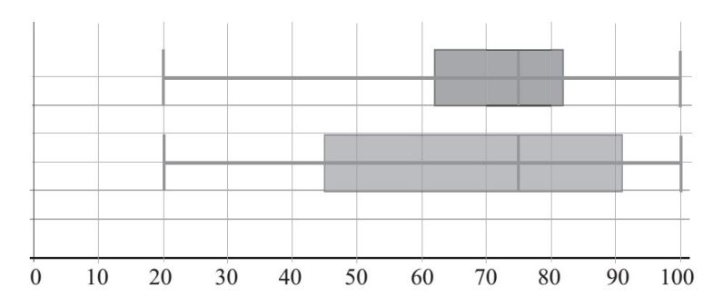
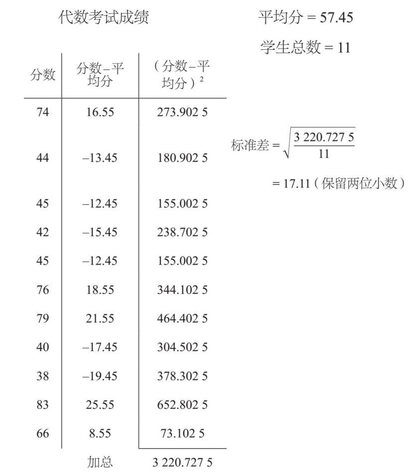

如果我想给一组数学考试成绩做标记，那么我通常会计算平均分数。这个值可以表明这个班的平均成绩如何，学生们也经常想知道他们的成绩相比于平均成绩如何。如果平均分数是75分（百分制），那可能意味着大多数学生要么略低于75分，要么略高于75分——他们的分数集中在75分左右。这也说明我的学生的能力比较相似，我的教学效果也比较平均。当然，数据也可以比这个更分散。一些分数很低的学生可以用高分数的学生来平衡，从而产生同样的平均分数。那么，如何让领导无须仔细检查所有分数就了解基本情况呢？
答案就是计算出数据离散的量度。下面介绍几个值，按从简单到复杂的顺序排列。
最简单的方法就是计算出极差：用最高分减去最低分。如果分数的极差是20，这就意味着考试的分数从约65分扩散到约85分。极差越大，数据的离散程度就越广。
由于极差只需用最高值和最低值就可以算出，所以它可能错误反映了数据的分布。如果其中一个学生得了20分，而其余的学生都在平均分的10%以内，那么极差就会看起来很大，且不能很好地反映数据的真实情况，因为20分可能是一个离群值（详情见下文）。
为了避免上面这个问题，我们可以使用四分位距，它可以显示中间50%的数据的分布。要做到这一点，我需要计算四分位数。中位数是指中间的数据，从数据开始第50%的数，即位于考试数据中心的值。如果查看数据的下半部分并找到这些数据的中位值，就可以得到第25%的数，它被称为下四分位数。对数据的上半部分进行类似的处理，则可以得出上四分位数，即第75%的数。因此，四分位距是指上四分位数减去下四分位数。
下面的盒须图（也叫箱形图）描述了两组六年级中学生的数学考试情况：

每个盒须图都有5条垂直的线。位于两端的两条线分别是最大值和最小值，这两条线生成了“须”。中间的三条线是下四分位数、中位数和上四分位数，这几条线形成了“盒”。
“盒”显示了得分的中间值（50%），而“须”可以显示剩余数值的分布。从这些图中可以看出，这两组数据的极差是100–20=80。上一组数据的四分位距为82–62=20，所以有一半的学生得分在彼此的20%以内。
下一组的数据具有相同的极差（如须形所示）和相同的中位数，但是从盒子部分可以看出，这组数的四分位距要大得多（91–45=46）。由此，我可以推断出，第二组学生的表现差异要比第一组学生更大，虽然两组的平均表现是相同的。
标准差衡量的是数据集的离散程度。它虽不是距离平均数的平均距离（称为平均绝对偏差），但是它也有一些非常有用的特性，我们将在后面讨论。
为了计算标准差，我们把每个数都减去平均数。当这个数小于平均数时，我们就会得到负值，但我们关心的是距离平均数的均值，与它是正值或负值无关。为了解决这个问题，我们把所有的数取平方，因为负数在平方后将变为正数。
我们把所有的平方值加在一起，除以数据的总数，然后取平方根来补偿之前的平方，就得出了标准差。举例如下：

结果说明，我的学生的分数很分散，不是很一致。不同组的数据可能具有相同的平均数和极差，但如果标准差较小，就意味着分数更向平均数靠拢。
离群值是指与其他数据不匹配，看起来过低或过高的数值。对于离群值的判定，有时有些随意：如果你认为一个数是离群值，它就是离群值：
高于平均数两个以上标准差
低于平均数两个以上标准差
在上四分位数以上，高于1.5个四分位距
或在下四分位数以下，低于1.5个四分位距
例如，2001年奥地利妇女的平均身高为167.6厘米，标准差为5.6厘米。上限为167.6 +（2×5.6）=178.8厘米，因此任意一位高于此身高的奥地利妇女都会被归为异常高。下限为167.6 –（2×5.6）=156.4厘米，因此任意一位低于此身高的奥地利妇女都会被认为是异常低。
当科学家从观测和实验中收集数据时，他们要对离群值非常小心了。离群值是真的吗？它应该被保存在数据集中，还是应该删除掉？科学家经常会重复实验多次，因为这样可以降低离群值对所产生的统计数据的影响。

20世纪70年代，美国国家航空航天局的航空器会定期测量上层大气中臭氧的含量。但在南极上空飞行时，经常会产生非常低的读数，分析软件将其判别为离群值。这使得直到10年后，在南极洲工作的科学家才发现了臭氧层空洞。臭氧层可以阻止太阳发出的大部分有害的紫外线辐射到达地表，因此对地球上的生命至关重要。幸好，随后发布了氯氟烃（它可以破坏臭氧层）的禁令，目前臭氧层正在慢慢修复，但要完全填满这个洞还需要几十年的时间。
离群值可能是真的，也可能是个错误值。无论是哪种，我们都需要仔细地调查。